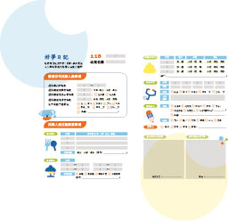

動態陪玩18:00–19:00
- 1
進入主題房
2 位托育員帶 4 位孩子進入今晚的主題房。
- 2
暖身律動
跟著音樂動一動，把白天的精力釋放出來。
- 3
主題任務遊戲
完成主題房的小任務，蓋上一枚任務章。
- 4
收拾與轉換
一起收玩具、喝水、如廁，準備吃晚餐。
生活照護19:00–20:00
- 1
洗手準備
洗手、擺餐具，孩子能做的讓他自己來。
- 2
晚餐
代訂餐點或家長自備，依過敏與飲食需求確認。
- 3
如廁與清潔
依年齡協助如廁、換尿布、擦臉洗手。
- 4
安靜時光
讀書作業角、拼圖或繪本，控制在 20 分鐘內。
動態陪玩與生活照護步驟為示範，待組內確認。
睡眠五步驟20:00–21:00
先舒緩情緒，再伸展身體；感官轉換後 30 分鐘內熄燈。每一步都可以跳過。
1
情緒舒緩
走過燈光漸暗的緩和走廊。
2
睡前伸展
簡單伸展與規律呼吸。
3
洗漱換裝
刷牙洗臉、換上睡衣。
4
共讀故事
助眠也助語言發展。
5
熄燈晚安
依睡眠小檔案個別陪伴。
安睡與夜間監測21:00–7:00
固定巡視
托育員依固定動線巡視每間主題房。
環境控制
溫濕度、亮度、空氣流通持續監測。
夜醒安撫
依個別安撫計畫處理並記錄。
早晨步驟7:00–9:00
- 01
溫和喚醒
柔和燈光、輕聲呼喚，不突然大聲叫醒或強迫起床。
- 02
如廁與清潔
依年齡協助如廁、換尿布、洗手與基本清潔。
- 03
更衣與物品整理
協助穿衣、檢查隨身用品，讓孩子練習自己來。
- 04
狀況確認・動態陪伴
觀察精神、情緒與身體；有異常依健康流程聯絡家長。
- 05
清晨交接
說明睡眠、夜醒與安撫情形，確認物品交接後離托。

好夢日記離托時交到家長手上
完成一夜托育後，托育員會把孩子的這一晚整理成一份「好夢日記」。
- 入托時的身體與情緒狀態
- 入睡前的安撫情形、入睡時間與夜醒次數
- 飲食、如廁與用藥紀錄
- 今晚在主題房的照片與小任務
- 托育員寫給家長與孩子的話
家長也能在「我的樂園」查看電子版，並回饋孩子回家後的狀況，一起調整下一次的照護。
